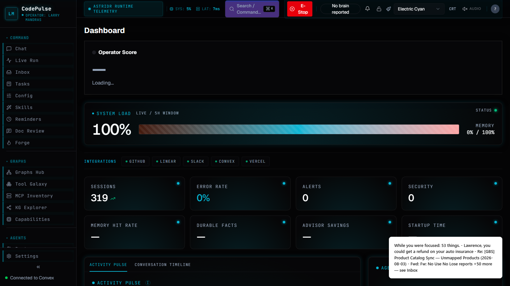
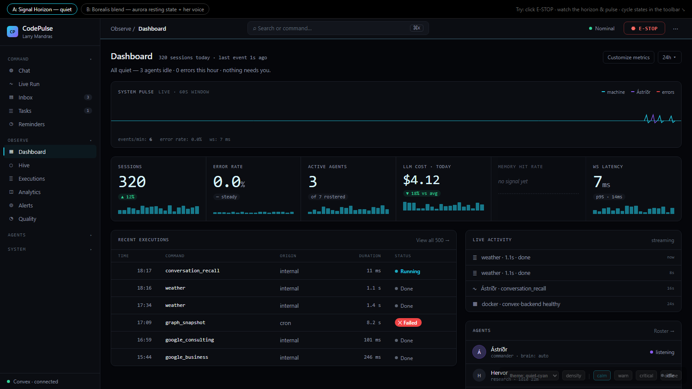
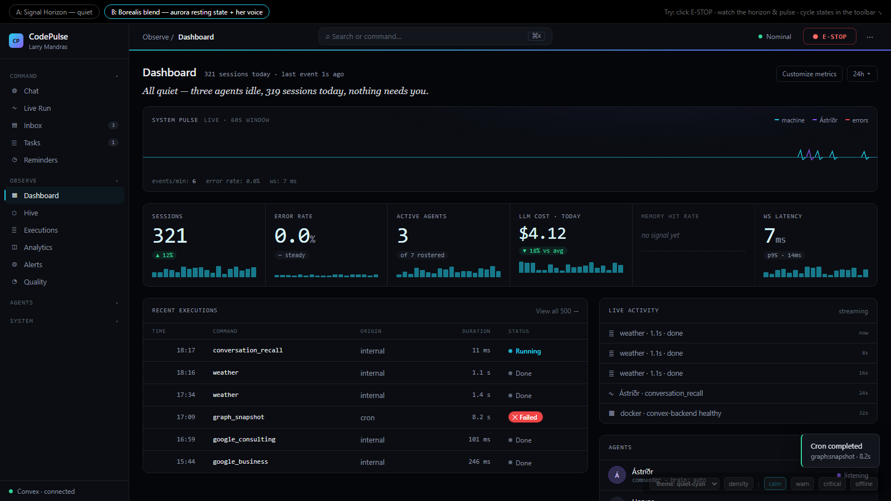
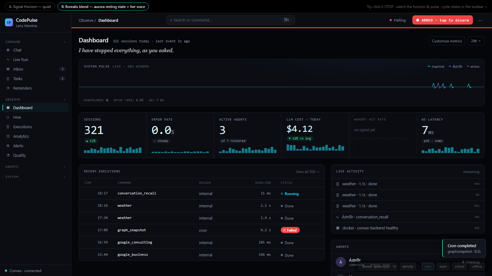
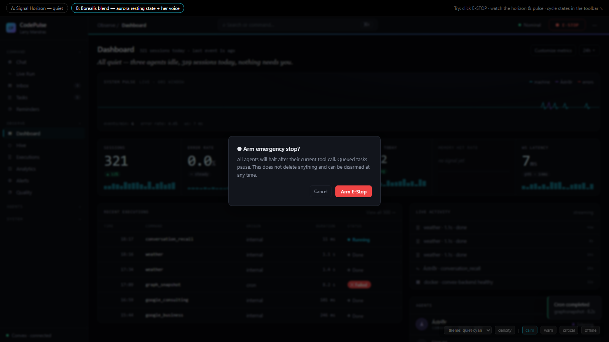

Current live dashboard vs the "Quiet Control Room" mockup · 2026-08-07 · both captured at 1600×900, cyan theme
Drag to compare
Left of the handle = today's live dashboard. Right = redesign Variant A (Signal Horizon). Drag anywhere.
Before — currentAfter — Variant A


What changed (the unanimous 3-model verdict, made visible)
Header: twelve competing controls → three zones; E-Stop fixed-width (it wrapped to two lines before); purple search pill → neutral command bar; telemetry pill deleted.
Signal Horizon: a 2px live line under the header replaces the CRT scanline + matrix background — events travel it as light; it turns crimson when E-Stop arms.
Pulse hero: the misleading "SYSTEM LOAD 100%" gradient bar → a live ECG of real events (cyan = machine, violet = Ástríðr, red = errors).
Instrument cluster: bordered glow-cards → one surface with hairline dividers, thin mono numerals, sparklines — and an honest "no signal yet" state instead of "—".
Quiet badges: filled cyan DONE pills → whisper-quiet dots; only Failed is filled, so failure actually pops.
Sidebar: 31 glowing uppercase mono items → sentence-case Geist in four collapsible domains, count badges, 2px active rail, no glow.
Truth line: one plain-language sentence answers "does anything need me?" (Variant B sets it in Ástríðr's serif voice).
More states

Variant B — Borealis blend. Aurora resting texture on the horizon, Ástríðr's serif voice for the truth sentence, aurora wash behind the Pulse.

The signature moment — E-Stop armed. The horizon goes crimson shell-wide, agents gray out, her line rewrites: "I have stopped everything, as you asked."

Destructive confirm done right. A real dialog — not a 5-second auto-expiring toast (the current Tasks-page pattern).Before, for reference. Distributed glow, dead "—" metrics, fabricated integrations row, wrapping E-Stop.
Feel it live
Screenshots undersell it — the mockup is fully interactive (live event stream, E-Stop arming, state cycling, density toggle):